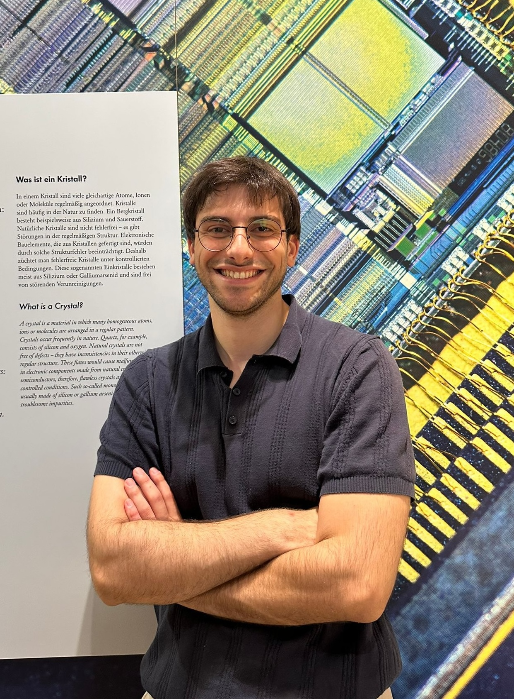
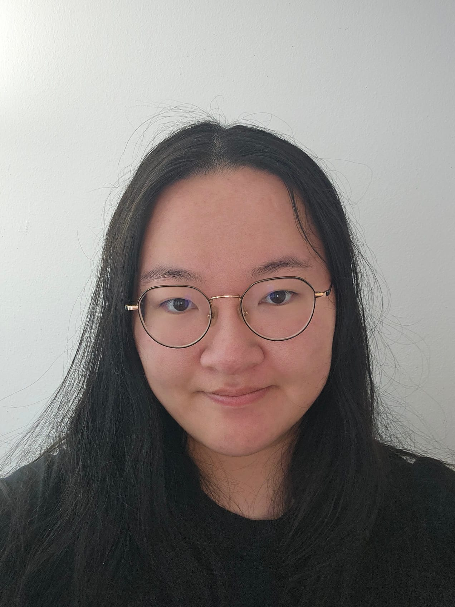

Meet the members of the RizzatoLab.

Roberto Rizzato
Group Leader, Technical University of Munich
I studied Chemistry at the University of Bologna, where I obtained my Master’s degree. I received my PhD from the Max Planck Institute for Biophysical Chemistry in Göttingen in 2016, specializing in electron spin resonance spectroscopy and advanced electron nuclear double resonance (ENDOR) techniques. After my doctorate, I worked in industry as a consultant, and in 2019 I joined Dominik Bucher’s Quantum Sensing Group at the Technical University of Munich, contributing to the development of diamond-based quantum sensors and the exploration of novel spin defects in low-dimensional materials. In 2025, I was awarded an ERC Consolidator Grant for the project NMR-NANOTUBES, enabling me to establish my independent research group at TUM.

Berk Kiliclar
Master's student, Technical University of Munich
I completed my bachelor’s in physics at LMU and am currently doing a master’s degree in condensed matter physics at TUM. My thesis focuses on the simultaneous characterization of multiple defects using an EMCCD camera.

Rui
Master's student, Technical University of Munich / LMU
I completed my bachelor's degree in Physics at Zhejiang University and I am currently pursuing the Quantum Science & Technology master's program at TUM and LMU. My academic interests include quantum sensing, spin physics, and solid-state quantum systems, particularly optically active spin defects and their applications in nanoscale quantum sensing.
Joining the Lab
We are recruiting PhD students and postdoctoral researchers. If you are interested in joining our group, please get in touch with a CV and a short statement of interest.
Contact: roberto.rizzato@tum.de